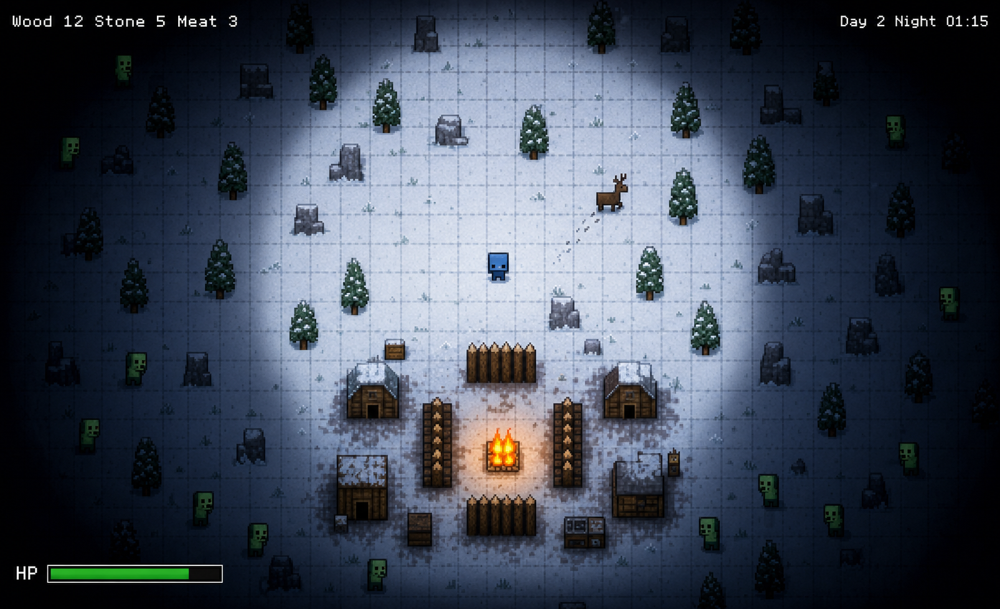

공유용 이미지 미리보기
자동 갱신: 2026-06-04. 공유 시 문서와 함께 아래 이미지 경로가 포함되어야 합니다.

assets/art/Sprites/Player/player_survivor_axe.png
assets/art/Sprites/Player/player_survivor_bow.png"끝없는 겨울. 마지막 마을의 마지막 수호자."
뱀서바이벌 × 낮/밤 베이스 디펜스 × 탑다운 설원 생존

"혼자서도 짧은 세션 안에 생존과 경영 두 재미를 모두 느낄 수 있는 게임이 없다."
낮에는 설원 탐험가, 밤에는 마을 수호자 — 두 역할이 하나의 세션(15~25분) 안에서 자연스럽게 전환된다.
이진혁, 27세, 직장인
| 건물 | 역할 | HP | 비용 |
|---|---|---|---|
| 🔥 Campfire | 좀비 화상 오라(2.5u DPS 6) + 마을 온도 유지 | 280 | 5W |
| 🏠 House | 인구 한도 +4 (동료 영입 필수) | 140 | 6W |
| 🥕 Fence | 외곽 차단 (마을 크기에 따라 자동 확장) | 14 | 1W |
| 📦 Storage | 자원 캡 +50, 농장 한도 +1 | 200 | 8W |
| 🌾 Farm | 식량 생산 (노인 워커 +5 보너스) | 90 | 6W |
| 🏹 Watchtower | 야간 자동 사격 + 동료 데미지 ×1.5 | 160 | 8W+4S |
| 타입 | 특성 |
|---|---|
| 아이 | 이동 빠름 · 전투력 낮음 · 비전투 역할 |
| 노인 | 이동 느림 · 농장 수확 +5 보너스 |
| 사냥꾼 | 원거리 공격 특화 |
| 치유사 | 주변 아군 HP 회복 |
| 무사 | 근접 전투 특화 · 바리케이드 방어 |
IL6.EditorBuild.BuildScript.BuildWindows → Build/Windows/IL6.exe6IL_v0.2.0_portable.exe| 버전 | 날짜 | 내용 |
|---|---|---|
| v0.2.0-build-refresh | 2026-06-05 | Unity 단독 개발 기준, 프로젝트 넘버링 실행파일, HUD 동일 레이어 비겹침 검증 절차 반영 |
| v0.2.0 | 2026-05-29 | UX 온보딩 씬 추가 (낮/밤 페이즈 2슬라이드 설명) |
| v0.1.0 | 2026-05-20 | ECS 기반 프로토타입 — 낮/밤 사이클, 자원 수집, 좀비 웨이브 |
Build/Windows/IL6.exe를 만들고 루트에는 6IL_v0.2.0_portable.exe와 실행에 필요한 6IL_v0.2.0_portable_Data/, UnityPlayer.dll, MonoBleedingEdge/ 런타임 파일을 함께 배치한다.assets/ 폴더를 함께 공유했을 때 열리는 상대 경로를 유지한다.자동 갱신: 2026-06-04. 코드, 씬, 프리팹, 설정 파일에서 참조가 확인된 리소스 기준입니다.
assets/art/Sprites/Player/player_survivor_axe.png, assets/art/Sprites/Player/player_survivor_bow.pngassets/UniversalRenderPipelineGlobalSettings.asset메모:
public/ 리소스는 제외했습니다.자동 갱신: 2026-06-04. 공유 시 문서와 함께 아래 이미지 경로가 포함되어야 합니다.
assets/art/Sprites/Player/player_survivor_axe.png
assets/art/Sprites/Player/player_survivor_bow.png